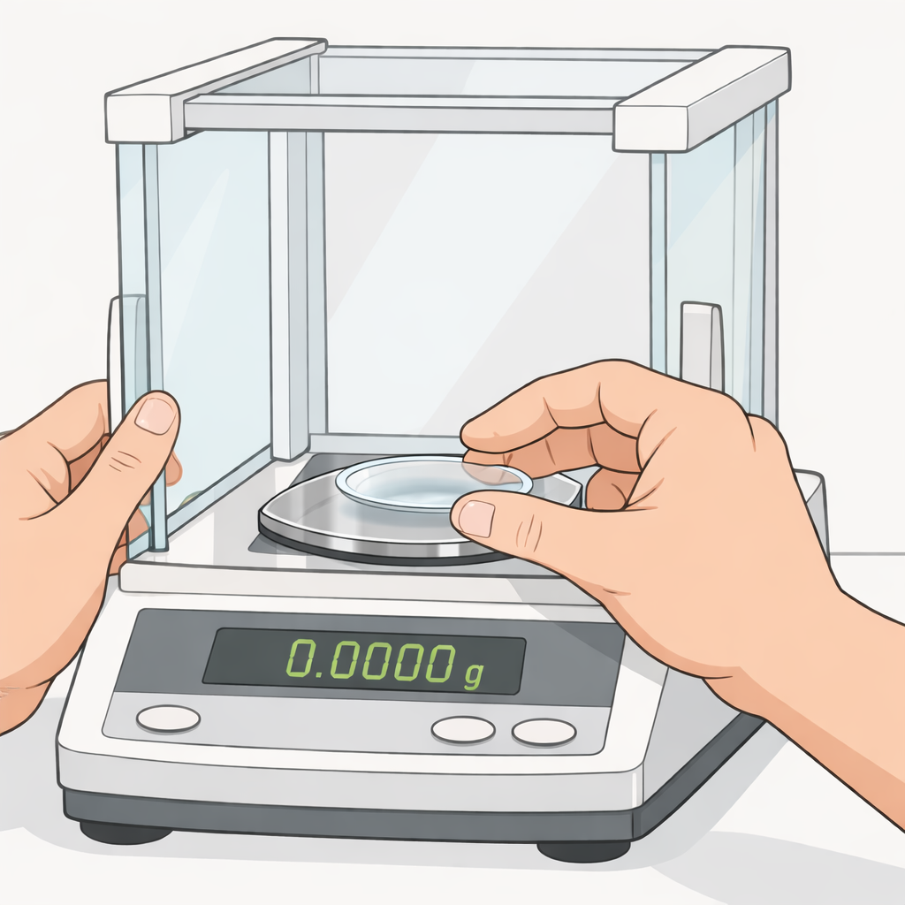
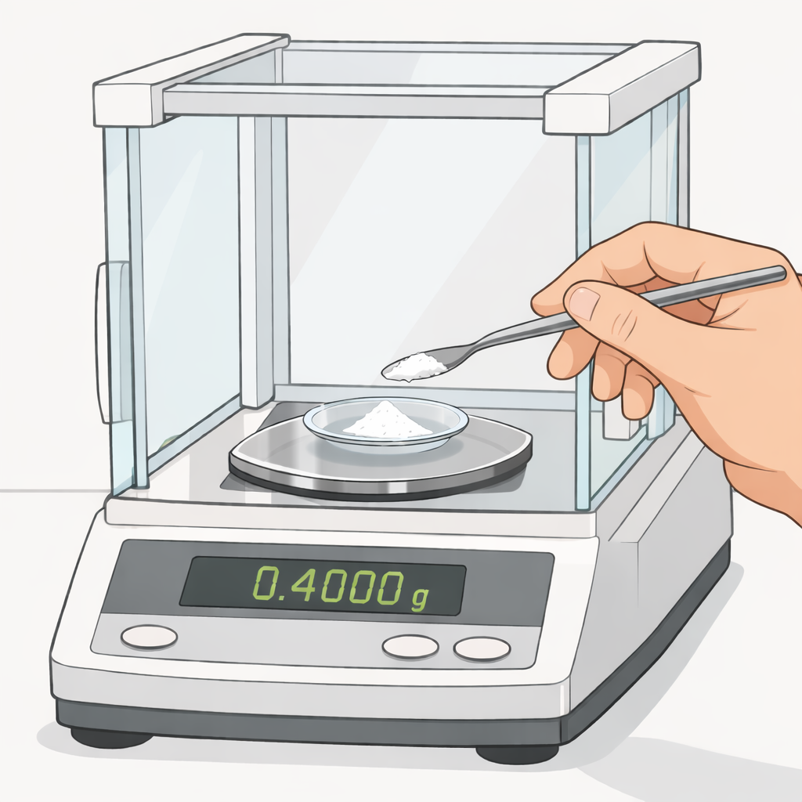
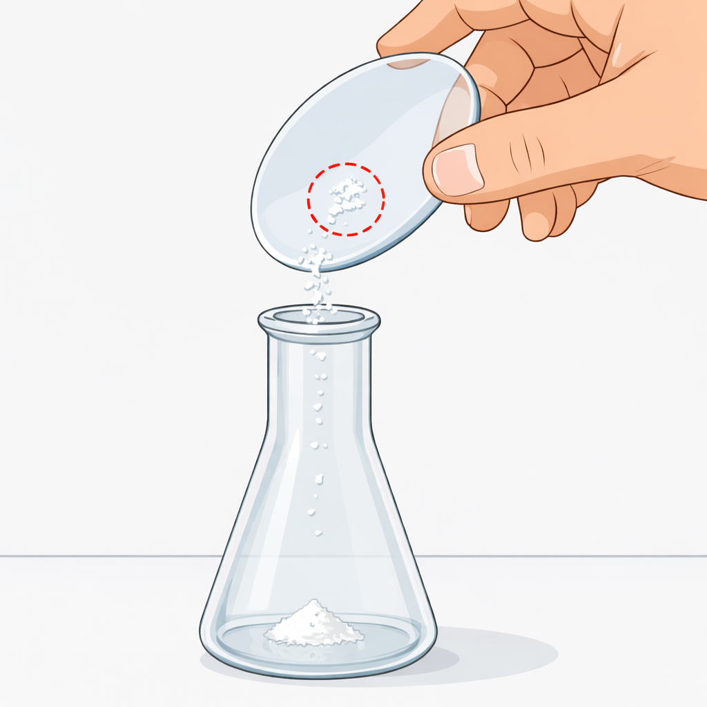
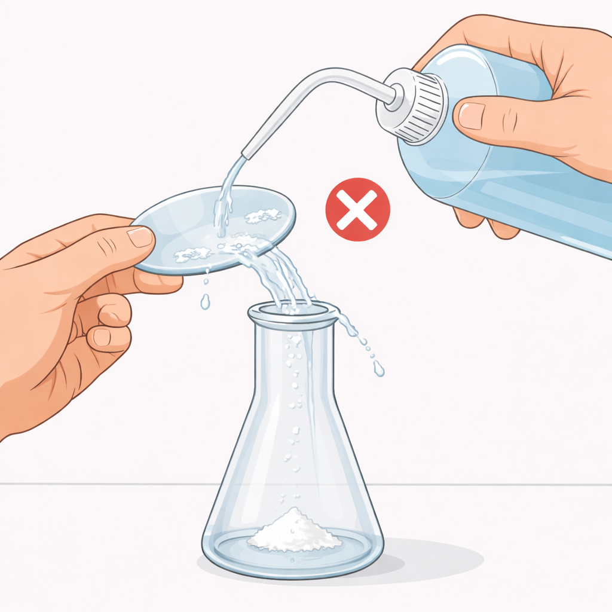
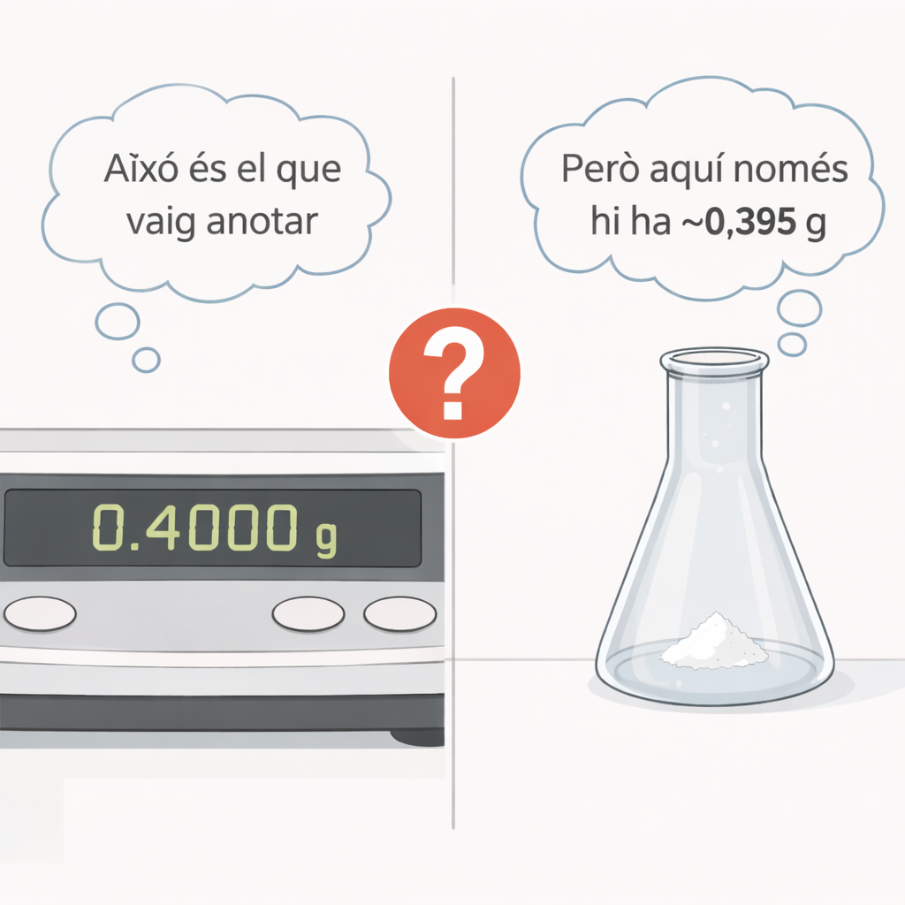
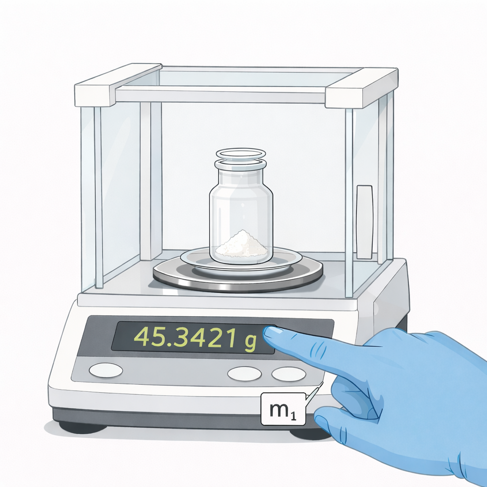
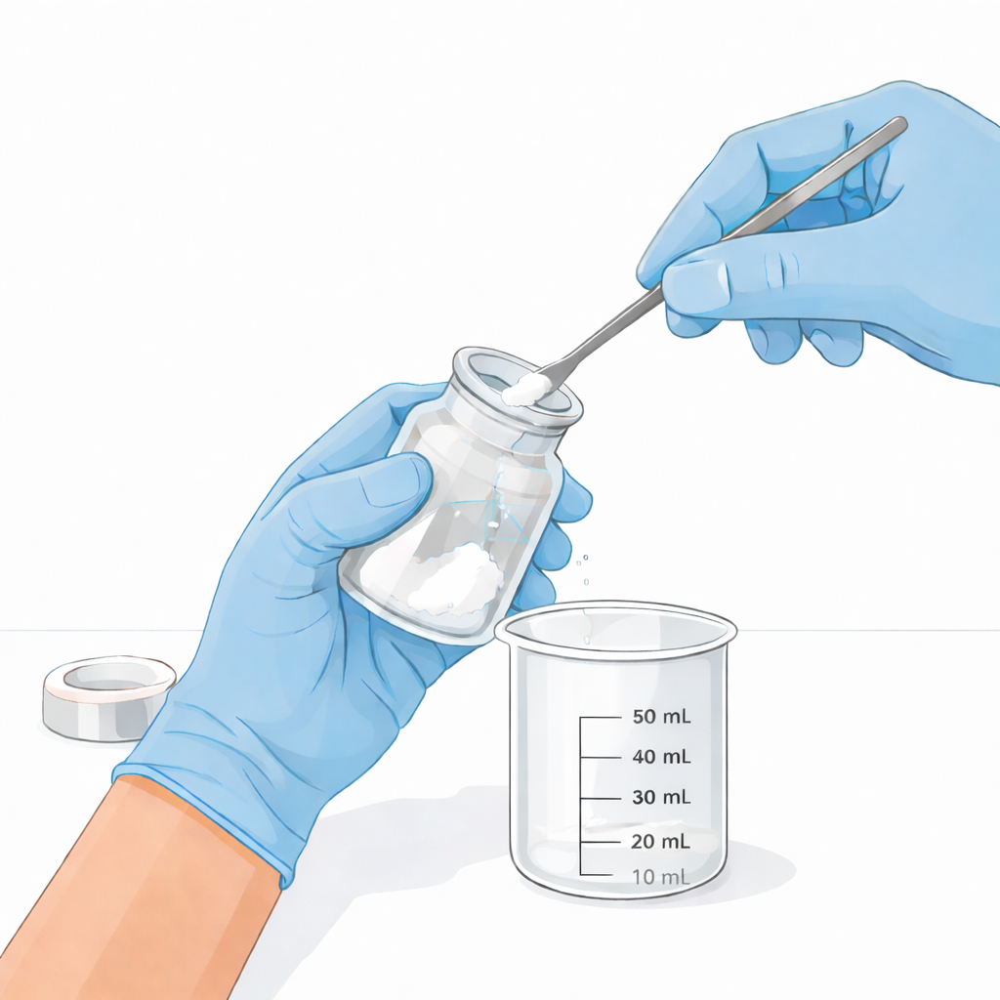
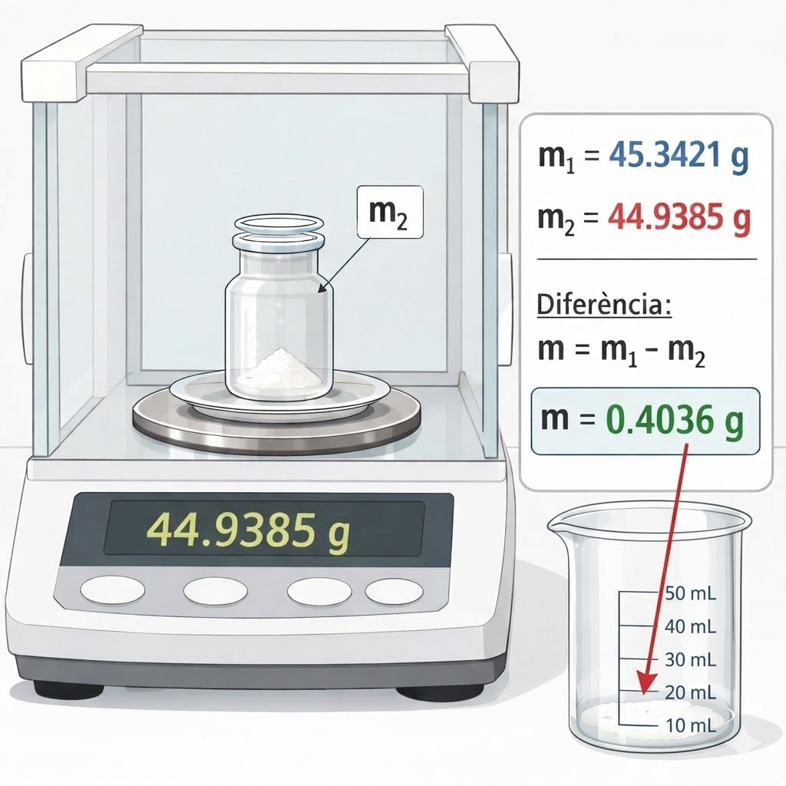
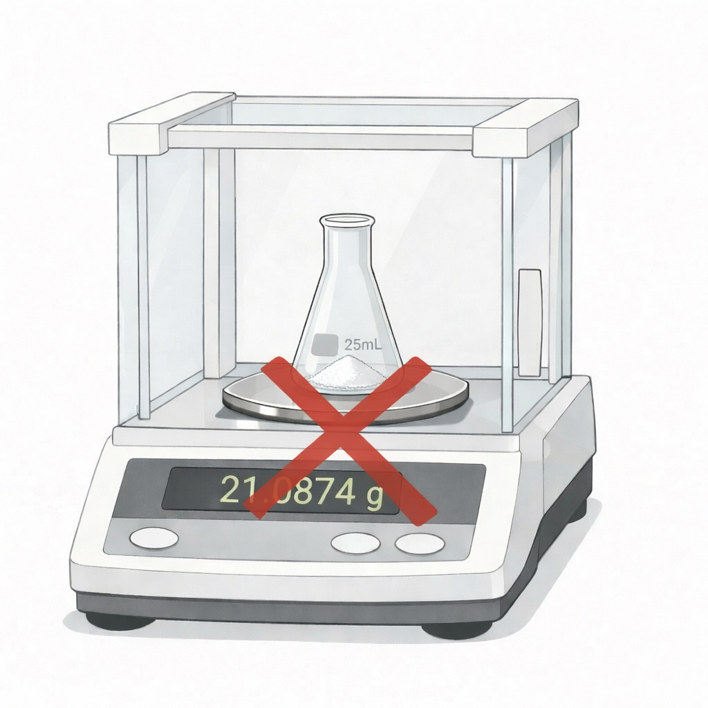

Per què pesem per diferència?
Per entendre per què la pesada per diferència és més precisa, vegem primer què passaria si ho féssim de la manera directa — i els problemes que ens trobaríem a cada pas.
Com NO s'ha de fer

Tarar el pesasubstàncies
Col·loquem el pesasubstàncies buit sobre la balança analítica i premem TARA. La pantalla marca 0,0000 g. Fins aquí, tot correcte — cap problema.

Afegir substància
Amb una espàtula, afegim el sòlid al pesasubstàncies fins que la balança marca 0,4000 g. Ho anotem a la llibreta. Encara cap problema... però ara ve el difícil.

Transferir al matràs
Primer problema: abocem el contingut del pesasubstàncies a l'erlenmeyer. Però... no tot cau. Queden grans enganxats a les parets del vidre. Hem perdut una part de la substància que havíem pesat.

Intentar rentar
Segon problema: si provem d'arrossegar el residu amb la piseta d'aigua, és difícil treure-ho tot — i a més, part de l'aigua cau pel camí i es perd. Mai tindrem la certesa d'haver recuperat tota la substància.

El resultat
Conseqüència: la balança deia 0,4000 g, però al matràs hi ha menys — potser ~0,395 g. Hem anotat un valor que no correspon amb la realitat. En química analítica, aquesta diferència és inacceptable.
No sabràs mai la massa real dins el matràs
Si peses directament i després transfereixes, la massa que has anotat no correspon amb la massa real al matràs. El residu que queda al pesasubstàncies és un error sistemàtic que fa que els teus resultats siguin sempre incorrectes.
Hi ha una solució elegant
No cal transferir-ho tot. Només cal pesar dues vegades.
Pesada per diferència

Peseu el pesasubstàncies amb la substància
Col·loquem el pesasubstàncies amb la tapa i la substància sobre la balança. Anotem la lectura completa, amb els 4 decimals.
m₁ = 45,3421 g

Transferiu al matràs
Abocem la substància a l'erlenmeyer. Queda residu al pesasubstàncies? No importa! No cal rentar ni preocupar-se. La transferència no ha de ser perfecta.

Torneu a pesar el pesasubstàncies
Tornem a col·locar el pesasubstàncies (amb la tapa i el residu que ha quedat) sobre la balança. Anotem la nova lectura.
m₂ = 44,9385 g
No importa si queda residu
El que hi havia al pesasubstàncies abans menys el que hi queda després = exactament el que ha anat al matràs. La diferència ho mesura tot, sense error.
🔬 Per què funciona?

No peseu mai el matràs receptor!
No poseu l'erlenmeyer ni el vas de precipitats a la balança per saber quanta substància hi heu posat. Feu servir sempre el pesasubstàncies amb la tècnica per diferència. El matràs és massa gran, pot estar humit, i la balança no està dissenyada per objectes tan pesants.